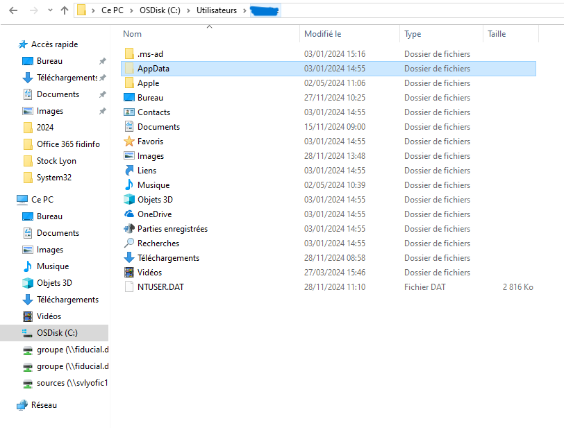

Rémi GENTE
Accueil
Profil
Parcours
Expériences professionnelles
Compétences
Projets
Veille Technologiques
Épreuves
Épreuve E4
Épreuve E5
Contact
PROJET n°3 - Projet en entreprise
Revenir à l'accueil
Informations du Projet :
Catégorie
: Dépannage PC
Logiciels Utilisé
: Windows 11, Acronnis.
Date du projet
: 2024
Projet d'un renouvellement de poste au sein d'une entreprise
Contexte du projet :
Le
renouvellement du PC s'inscrit dans le cadre du cycle de mise à jour du matériel informatique afin de garantir des performances optimales, une meilleure sécurité et une compatibilité avec les outils et logiciels récents. Cette initiative vise à offrir aux collaborateurs des équipements adaptés à leurs besoins professionnels, tout en favorisant une productivité accrue et une expérience utilisateur améliorée.
Objectif :
L
'objectif de ce renouvellement est de remplacer l'ancien poste d'un collaborateur par un PC plus récent tout en conservant ses données. Pour ce faire, nous utiliserons plusieurs logiciels afin de faciliter cette transition.
Première étapes :
Une
fois le pc du client récupérer, la première chose a faire est de faire une sauvegarde de ces donnée via l'application Acronis :
Pour cela il faut boot sur la clé :
Puis une fois dans Acronis slectionné sauvegarde des données :
Deuxième étapes :
Une fois la sauvegarde fini on peut boot sur le windows et rentre sur le compte utilisateur du collaborateur avec sont mot de passe. Puis, il faut suivre le chemain suivant : C:\Users\(Nom du compte). Sélectionner tout les éléments de ce dosseier et les tranférer sur un disque dur :

Ensuite, faut afficher les dosseier cacher et allez dans roming et récupérer le dossier Thunderbird (c'est la boite mail) :
Pour finir, il suffit juste de transférer les application de la clé USB au nouveau pc du client et de le mettre dans le même emplacement.